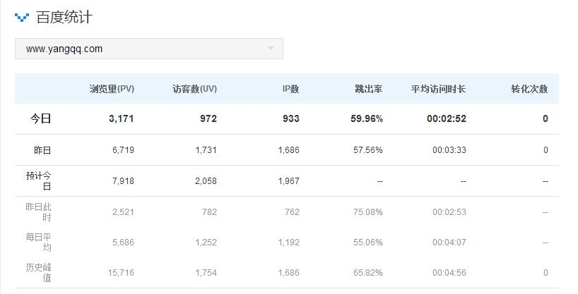
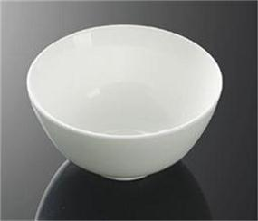
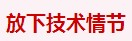
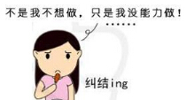
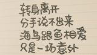

IP要突破2000+了
发布时间：2015-01-09作者：杨青个人博客：[日记]
很久都没有更新网站了，现在得空看了下网站怎么样了，没有想到，百度权重4,PR3,访问IP也在上升，一年的时间没有更新，看来一次性做好一个网站很有必要，这回一劳永逸了
阅读全文>>【孕期日记】生活本该如此
发布时间：2015-01-08作者：杨青个人博客：[日记]
这是第一篇2015年的生活日记，我的这个博客也因为孕期给耽搁了不少，要不然每个月都能出一两套模板，或者定时更新一些技术文章，群里面也很少参与讨论。现在因为这个即将到来的小家伙，我不得不舍弃一些时间和精力。
阅读全文>>即便是坑，我也要拉你入伙！
发布时间：2014-07-31作者：杨青个人博客：[程序人生]

对于刚毕业的学生来说，想学习建网站，掌握一技之长，最简单的入门无非就是学会html和css，先前发表过一篇文章《如果要学习web前端开发，需要学习什么？》，如果你还不知道如何着手，请仔细阅读....7天的时间，入门是没有问题的，当然，如果你用心的话！
阅读全文>>女程序员职业生涯该如何发展？
发布时间：2014-07-10作者：杨青个人博客：[程序人生]

不知道自己以后还能不能继续干这一行，结婚不到一年，也许某天开始会离开一两年，当再回来工作的时候，不知道是否能有单位再愿意聘请我，或者说自己能否再胜任这工作，因为这计算机编程专业发展的速度也相当快...三天不学都会落后，更何况是一年甚至更久...
阅读全文>>每个人的生命里都只有一个碗
发布时间：2014-06-30作者：杨青个人博客：[欣赏]
每个人的生命里都有一只碗，碗里盛着善良、信任、宽容、真诚，也盛着虚伪、狭隘、猜忌、自私……请剔除碗里的杂质，然后微笑着迎接另一只碗的碰撞，并发出你们清脆、爽朗的笑声吧！
阅读全文>>伪球迷看世界杯
发布时间：2014-06-14作者：杨青个人博客：[日记]

世界杯来袭，无论是网络还是电视、就连街上的宽带宣传单都印上了世界杯赛程表，起先吸引我的还是那漂亮的LOGO。我是十足的伪球迷，不懂球又要看球，不熬夜看球，第二天先打开搜狐看新闻看比分再打开电视看回播。
阅读全文>>犯错了怎么办？
发布时间：2014-04-09作者：杨青个人博客：[日记]

看到昔日好友发了一篇日志《咎由自取》他说他是一个悲观者，感觉社会抛弃了他，脾气、性格在6年的时间里变化很大，很难适应这个社会。人生其实就是不断犯错的过程，在这个过程中不断的犯错，不断的吸取教训，不断的成长。也许日子里的惊涛骇浪，不过是人生中的水花摇晃，别用显微镜放大你的悲伤。
阅读全文>>两只蜗牛艰难又浪漫的一吻
发布时间：2014-03-29作者：杨青个人博客：[欣赏]

这是国外一摄影师拍摄到的，看到这一幕，还真有爱！关于两只蜗牛相遇，该这般解释：两个蜗牛相遇的时候，互相用触角接触，然后头和头相对，身体并连，彼此生殖腔的位置相接...
阅读全文>>春暖花开-走走停停-发现美
发布时间：2014-03-12作者：杨青个人博客：[日记]

生活的美，源于自然。三月春暖花开的日子，何不出去踏踏青，寻找美呢.镜头下，总有一种事物能吸引你，作为设计师，这些素材就是你的灵感....
阅读全文>>简单手工纸玫瑰
发布时间：2014-01-29作者：杨青个人博客：[日记]

过年前后都是在无聊中，在网上学了4种玫瑰折法，整张折的玫瑰步骤很多，关键的一步对折经常容易把纸折坏，所以选择了最简单的折法，把纸张分解开，然后一张张的用双面胶粘上。效果还是不错吧！
阅读全文>>某一人似曾相识、某一刻似曾经历
发布时间：2014-01-13作者：杨青个人博客：[经典语录]

有时候会有这样的错觉：“某一人似曾相识、某一刻似曾经历”，这样奇特的感受大概你也有过。心理学称之为“即视现象”，是记忆中太多杂乱信息制造出的一种潜意识矛盾冲突。
阅读全文>>个人博客从简不繁
发布时间：2014-01-13作者：杨青个人博客：[日记]
十一月中旬开始，排名突然下降了，网站“个人博客”关键词排名从第一页第二名滑落到100页以后了，个人博客这个关键词百度已经搜不到了，仅有google、搜狗、360排名还在前几名。找了各种原因，删除了有问题的友链，也通知了其他博主暂时不换链接，一段时间下来，排名还是那样，没有变化。
阅读全文>>云南之行--丽江古镇玉龙雪山
发布时间：2013-12-17作者：杨青个人博客：[日记]

因为怕高原反应，买的特产姜糖我从下车开始就一直在吃，在排队的时候，检务员还提醒早点儿吃巧克力啊、姜糖什么的。也没枉费我们吃了那么糖，一口气上了山顶，只感觉稍微有点儿头晕.
阅读全文>>云南之行--大理洱海一日游
发布时间：2013-12-16作者：杨青个人博客：[日记]
下午最后一个行程就是大理洱海，下午一大半的时间是在船上度过的。每个人登船有礼品拿，先到的可以到大厅喝茶看戏，我们四个人极力往前，结果还是挤到了上面，不过，看看外面的山水、晒着太阳，吹着海风，还是蛮不错的。
阅读全文>>云南之行--初到昆明滇池半日游
发布时间：2013-12-15作者：杨青个人博客：[日记]
云南一直以来是我最想去的理想地，十月份刚好空出时间，于是计划去云南。网上搜了一下旅行社的信息，从成都报名参加6日单飞全程在5000块钱左右，十月份是旅游黄金季，客服一定要我当天就定下来，要不然就没有位置，所以，只能放弃，干脆自助穷游一次...
阅读全文>>做程序员的这些年，慢慢才体会到健康才是奢侈品
发布时间：2013-12-12作者：杨青个人博客：[日记]
为什么会有这样的感慨，因为这些年我周围的同事朋友的身体问题都相继报警，包括我也这样，为了调试代码，解决bug，满足一切客户的要求，缺乏运动，从事这个行业这么多年，久坐成病....病因找到了于是开始了我漫长的康复计划。早晚飞燕运动，每天下午半个小时的瑜伽球或是草裙舞，热汗淋漓。这么多天下来，能躺不坐，能坐不站，好似症状好些了....
阅读全文>>再看4年前某婚恋网站我的十条征婚条件
发布时间：2013-11-25作者：杨青个人博客：[日记]

意外的是这个当地的婚恋网站到目前还存在，更意外的是，我的个人帐号还保存在他们网站上。好奇心迫使我打开个人资料看看到底当年写了什么样的征婚条件。原来这些年这些标准一直都没有变过，因为习惯，所以喜欢！
阅读全文>>抄袭门过后--丢掉心结，重拾自己
发布时间：2013-11-22作者：杨青个人博客：[日记]
那仅有的一次抄袭被识破后，虽然我后来不断的努力写好的文章，在教育报刊杂志投稿并发表，但总被盖上了可能是抄袭的帽子。我怨老师的毫不留情，更多的是怨自己至今还放不下。如果我本身作文水平就一般，不会经常被当范文，不那么骄傲，我就不会摔得很惨， 实在想不出的话题，哪怕写得再糟，也不会抄袭别人的作品...
阅读全文>>程序员请放下你的技术情节，与你的同伴一起进步
发布时间：2013-11-04作者：杨青个人博客：[日记]
如果说掌握一门赖以生计的技术是技术人员要学会的第一课的话， 那么我觉得技术人员要真正学会的第二课，不是技术，而是业务、交流与协作，学会关心其他工作伙伴的工作情况和进展。
阅读全文>>柴米油盐的生活才是真实
发布时间：2013-10-21作者：杨青个人博客：[日记]
婚礼不过就是一个仪式，婚礼上的誓言就是主持人给我们的一句台词，我们俩成了这台词的演员。两个人最浪漫的时刻却在平平淡淡的生活中....
阅读全文>>一个SEO站长分享个人博客产品网赚建站经历全过程
发布时间：2013-09-22作者：杨青个人博客：[程序人生]
我是一个普通的seo，更是一个再普通不过的站长，每天在网络公司优化着没完没了的企业网站，分析着杂乱无章的数据。每天15个小时面对电脑的生活可能是一种煎熬，但是我觉得很踏实，因为我在用我的双手和智慧来赚钱。
阅读全文>>女程序员两年外包的日子
发布时间：2013-09-22作者：杨青个人博客：[程序人生]
跻身IT外包行业已有两年半的时间了，从走出大学校门踏入社会门槛的那刻起，便走进了另外一个世界-----IT世界。其实，做IT这个行业并不是我一开始的志愿，因为本身也并非计算
阅读全文>>一个三十而立的男程序员真是讲述：代码搅乱我的生活
发布时间：2013-09-17作者：杨青个人博客：[程序人生]

我做了四年程序员。这是非常沉闷的一个工作，如果对这行有爱好，还觉得比较有乐趣。如果光是为糊口，则这工作会把人逼疯。像我已经连续四年在开发同一个软件，每日睁开眼就是软件、夜里睡觉闭眼还是软件。只有更长，没有最长，据我所知，国内有程序员连着10多年都在开发同一个软件。
阅读全文>>爱情不容有错，即使错了那就重来
发布时间：2013-09-08作者：杨青个人博客：[日记]
进一好友空间，再一次看到她置顶的那一篇《他和她的故事》爱情在他俩的生活中经历了不少分分合合，但最后俩人还是走在了一起。当今天再一次阅读的时候，我没有第一次那么感性，我注重他们俩曲折的过程，其中出现过第三者...
阅读全文>>